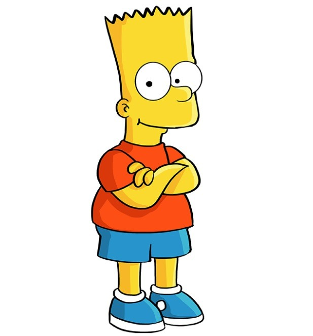

«Сі́мпсони» (англ. «The Simpsons») — американський анімаційний сатиричний серіал, створений Меттом Ґрейнінґом для компанії «Fox». Мультсеріал — сатирична пародія на стиль життя середнього класу США, втілена в сім'ї Сімпсонів, яка складається з Гомера, Мардж, Барта, Ліси та Меґґі. Більшість подій відбуваються у вигаданому містечку Спрінґфілді (англ. Springfield). Шоу висміює численні аспекти життя людей, американську культуру, суспільство, навіть американське телебачення.

Гомер Джей Сімпсон (англ. Homer Jay Simpson) — один із головних героїв мультсеріалу «Сімпсони». Гомер — милий та кумедний, проте іноді грубий і неввічливий батько родини. Він має очевидні вади: товстий, лисий і не дуже розумний. Нерідко він поводиться як блазень, абсурдно, егоїстично і нетактовно, але все ж лишається симпатичним.

Марджорі (Мардж) Сімпсон (дівоче прізвище — Був'є) (англ. Marjorie "Marge" Simpson, née Bouvier) — один з головних персонажів анімаційного серіалу Сімпсони, дружина Гомера Сімпсона, мати Ліси та Барта. Домогосподарка, майже весь свій час проводить удома доглядаючи наймолодшу дитину Меґґі, а також Барта, Лісу і чоловіка. Найвідоміша особливість героїні — блакитне волосся зібране у високу зачіску — «вулик». Мардж названо на честь матері творця серіалу Мета Ґрейнінґа Марґарет (Мардж) Ґрейнінґ.

Бартолом'ю ДжоДжо «Барт» Сімпсон (англ. Bartholomew JoJo «Bart» Simpson) — один із головних героїв мультиплікаційного серіалу Сімпсони. Барт — найстарша дитина Гомера і Мардж Сімпсон. У нього також є дві молодші сестри — Ліса і Меґґі. Барт є втіленням образу бешкетника та посереднього учня у школі. Разом зі своїм батьком Барт є одним із найвідоміших персонажів у цьому серіалі.
Лі́са Марі Сімпсон (англ. Lisa Marie Simpson) — персонажка анімаційного телесеріалу «Сімпсони», озвучена Ярдлі Сміт. Автор серіалу Мет Ґрейнінґ назвав героїню іменем сестри.

Маргарет «Меґґі» Сімпсон (англ. Margaret "Maggie" Simpson) — одна з головних героїв мультсеріалу Сімпсони, найменша дочка Гомера Сімпсона та Мардж Сімпсон. Протягом усіх років серіалу Меґґі не росте і завжди залишається немовлям у повзунках та підгузнику. Попри свій вік Меґґі потрапляє в різні пригоди разом зі своїм братом Бартом та сестрою Лісою. В одному з серіалів про майбутнє Ліси, Меґґі з'являється дорослою, але навіть там у неї немає слів. Ідею цього персонажу Мет Ґрейнінґ запозичив від своєї молодшої сестри Меґґі Ґрейнінґ.